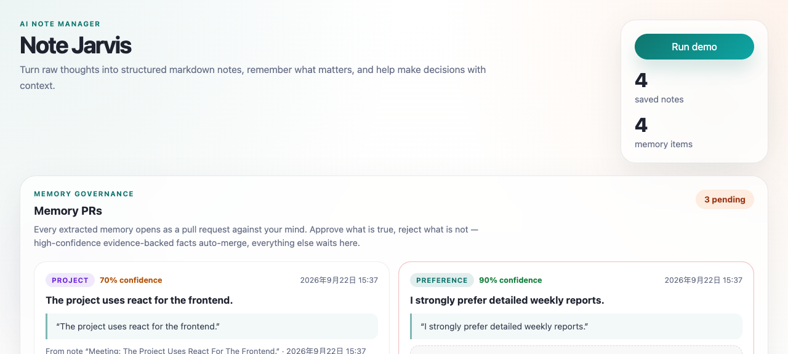

Note Jarvis
A local-first AI memory system where every memory is a pull request.本地优先的 AI 记忆系统：每条记忆都是一个 Pull Request。
Note Jarvis captures raw notes, extracts candidate facts with evidence, and — instead of silently writing them to memory — opens each one for human review. High-confidence facts backed by an exact quote can auto-confirm; everything else waits in a PR-style queue. When a new fact contradicts a confirmed one, nothing is overwritten: the conflict surfaces as a proposal carrying both versions, and you decide which survives.Note Jarvis 捕获原始笔记，抽取带证据的候选事实——但不静默写入记忆，而是把每一条都交给人来审查。高置信且引文精确的事实可以自动确认，其余进入 PR 式审查队列。当新事实与已确认事实矛盾时，从不覆盖：冲突以同时携带两个版本的提案浮出，由你决定哪条存续。
- 0.95 Retrieval MRR检索 MRR
- 0% Auto-confirm error rate (from 16.7%)自动确认误判率（从 16.7%）
- 0.815 External hit@4 · 500 Q, pure local外部 hit@4 · 500 题，纯本地
- 16 Closed eval loops评估修复闭环
- $0 Cost per run · zero API calls每次运行成本 · 零 API 调用
The problem问题
Personal:个人层面： I take notes constantly — meeting takeaways, project decisions, half-formed ideas — and then never see most of them again. When a decision comes up later, the context I need is buried in a note I forgot I wrote.我记了大量笔记——会议要点、项目决策、灵感碎片——然后其中九成再也没有被看过。等到做决策需要上下文时，它埋在一条我忘了写过的笔记里。
Industry:行业层面： every AI memory product on the market makes the same trade-off on the user's behalf, without asking:市面上所有 AI 记忆产品都替用户做了同一个权衡，而没有问过用户：
| Product | Write policy | Conflict handling | Auditability |
|---|---|---|---|
| ChatGPT memory | fully automatic | silently replaces | post-hoc “sources” view |
| Mem0 v3 | ADD-only, never overwrite | deferred to retrieval ranking | none for consumers |
| Letta (ADE) | agent edits its own memory | background agent reconciliation | developer tooling |
| Note Jarvis | proposed with evidence, human-reviewed | human arbitration | built-in, per-fact provenance |
| 产品 | 写入策略 | 冲突处理 | 可审计性 |
|---|---|---|---|
| ChatGPT memory | 全自动 | 静默替换 | 事后“来源”视图 |
| Mem0 v3 | 只增不覆盖 | 推迟到检索排序 | 消费者侧无 |
| Letta (ADE) | Agent 自行编辑记忆 | 后台 Agent 调和 | 面向开发者 |
| Note Jarvis | 带证据提案，人工审查 | 人工仲裁 | 内建，逐条溯源 |
Mem0 retreating from automatic conflict resolution to “keep everything, sort it out at read time” is an implicit admission that auto-resolve is unreliable. ChatGPT going fully automatic traded auditability away for convenience. I wanted the opposite bet: keep the human in the loop at write time, where the cost of review is lowest and provenance is exact.Mem0 从自动冲突解决退到“全都保留、读取时排序”，等于官方承认自动解决不可靠；ChatGPT 转全自动更新，是用可审计性换了便利。我想下注另一条路线：把人留在写入时刻的回路里——此时审查成本最低、出处最精确。
Product scope, roadmap, and the “explicitly won’t do” list: docs/PRD.md.产品范围、路线图与“明确不做”清单见 docs/PRD.md。
How it works工作方式
capture ──► structured note ──► extraction ──► policy gate ──► merge decision ──► memory store
│ │ │
evidenceQuote auto-confirm ADD / UPDATE / CONFLICT
per fact only for exact- (CONFLICT always waits
+ confidence quote, high- for human arbitration)
confidence facts
- Extraction works in English and Chinese, pulls every memorable sentence (not just the first match), and attaches the exact evidence quote and a tiered confidence to each candidate.抽取支持中英双语，抓取每一条值得记住的句子（而非只取第一条匹配），并为每个候选事实附上精确的证据引文与分层置信度。
- The policy gate auto-confirms only facts that pass four hard conditions: confidence ≥ 0.9, an exact quote, non-hedged, non-sensitive. Everything else waits in a review queue. Auto-confirm can be disabled with one env flag.策略门只放行同时满足四个硬条件的事实自动入库：置信度 ≥ 0.9、精确引文、非对冲表述、非敏感；其余全部进入审查队列，且可用一个环境变量整体关闭自动确认。
- Three-state merge: new facts are added, restatements strengthen the original, contradictions become proposals that challenge the confirmed memory until the user decides. Superseded facts keep a chain — nothing is ever silently deleted.三态合并：新事实 ADD、重述强化原事实、矛盾生成 CONFLICT 提案，等用户裁决；被取代的事实保留完整 supersede 链——任何数据都不会被静默删除。

Storage is plain files — markdown notes, JSON memory, a rebuildable index. No database, no install, no account, no API key. Files are the source of truth: git-diffable, portable, Obsidian-compatible.存储是纯文件：markdown 笔记 + JSON 记忆 + 可重建索引。没有数据库、没有安装、没有账号、没有 API key。文件即真相：可 git diff、可迁移、兼容 Obsidian。
Key decisions, and what I ruled out关键决策，以及被否掉的方案
Every decision below is recorded with its options, evidence, costs, and revisit conditions in docs/TRADEOFFS.md — the point is proving “every decision has evidence and cost awareness”, not post-hoc rationalization.以下每条决策的选项、证据、代价和重访条件都完整记录在 docs/TRADEOFFS.md——目的是证明“每个决策都有证据和代价意识”，而不是事后合理化。
-
1 · Local heuristics over LLM extraction — decided by measurement, not by faith1 · 本地启发式而非 LLM 抽取——由测量决定，不靠信仰
I froze the shipped prompt and ran both LLM tiers against the same gold labels:冻结产品实际使用的 prompt，在同一套 gold 标注上对比两档 LLM：
Type contract Keyword-only recall Cost per run Local heuristics 100% 100% $0 deepseek-flash 22.2% 83.3% $0.0052 deepseek-v4-pro 16.7% 77.8% $0.0233 类型契约达标率 关键词召回 每次成本 本地启发式 100% 100% $0 deepseek-flash 22.2% 83.3% $0.0052 deepseek-v4-pro 16.7% 77.8% $0.0233 The nuance matters: this is not “LLMs are bad” — it is “this prompt + model combination loses to free rules” (the prompt lists the type vocabulary but teaches no assignment policy). The revisit conditions are written down: if a model clears 95% on the frozen contract, the decision reopens.细节很重要：这不是“LLM 不行”，而是“当前 prompt + 模型组合输给了免费的规则”（prompt 只列了类型词表、没教分配策略）。重访条件已写明：若某模型在冻结契约下达到 95%，该决策重新打开。
-
2 · Human arbitration over auto-resolve — because I got burned by my own bug2 · 人工仲裁而非自动覆盖——因为我自己被自己的 bug 教育过
An early dedupe bug silently merged conflicting fact pairs on read/write; an old confirmed fact got absorbed with dangling citations. That P0 incident — invisible to unit tests that never passed through the load/save loop — is the strongest evidence for why “silently overwrite” is the wrong default for a trust product. Conflicts now surface as side-by-side proposals; the user decides with one click.早期一个 dedupe bug 在读写时静默合并了相互冲突的事实对，旧的已确认事实被吸收、引用悬空。这个单测从未暴露的 P0 事故，是对“静默覆盖不配当信任型产品默认值”最有力的证据。冲突现在以新旧对照的提案形式浮出，用户一次点击完成裁决。
-
3 · An honest regression: stemming won externally, lost internally3 · 一次诚实的回归：词干化在外部赢、在内部输
Adding a light English stemmer lifted the external benchmark (lexical hit@4 0.615 → 0.677) while regressing the internal gold set (lexical MRR 0.946 → 0.901) — internal queries match the notes' surface forms by construction. I shipped it and documented the trade-off rather than re-tuning the gold set around the fix. External representativeness beats internal perfection.加轻量英文词干化后外部基准提升（lexical hit@4 0.615 → 0.677），内部 gold set 却回归（lexical MRR 0.946 → 0.901）——因为内部查询天然使用笔记的表层形式。我选择上线并记录这个 trade-off，而不是围绕修复重调 gold set。外部代表性 > 内部完美分数。
-
4 · A negative result, settled: retrieval-layer abstention4 · 一个定案的负结果：检索层弃答
Could the retrieval layer refuse to answer when the corpus doesn't contain the fact? I simulated five rule variants offline across all 500 external questions. Best case: 2 abstention questions fixed, 13 answerable questions wrongly zeroed. No threshold separates the populations — abstention is answer-layer work. Zero code changes shipped; the value was not investing further in a wrong direction.检索层能否在“语料不含所问事实”时拒绝回答？离线模拟了 5 个规则变体、跑完全部 500 道外部题：最好的变体 +2 道弃答修复、−13 道正常题被错杀。两个种群不存在可分阈值——弃答是答案层的职责。零代码变更收口；这条决策的价值在于避免了在错误方向上继续投入。
Evaluation: the harness shipped before the features settled评测：harness 先于功能定型
AI features without measurement are hypotheses. I built the eval first — it ended up consuming about a third of the shipping time, and at least 3 of the 16 closed loops (the hybrid structural gap, the auto-confirm safety hole, the dedupe P0) could only have been found by evaluation.没有度量的 AI 功能只是假设。我先建了评测——它最终占了约三分之一交付工时，而 16 个闭环里至少 3 个（hybrid 结构性漏召回、自动确认安全漏洞、dedupe P0）只有评测才可能暴露。
| Layer | What it is | Headline |
|---|---|---|
| Internal gold sets | 59 hand-labelled retrieval queries, 8 adversarial auto-confirm cases, plus classification / memory-recall / governance / decision sets | MRR 0.950 (lexical) / 0.956 (hybrid); Recall@4 94.2%; auto-confirm FPR 16.7% → 0% |
| External benchmark | LongMemEval-S, 500 independently authored questions, zero API calls | pure-local hit@4 0.815 — no LLM, no API key, deterministic |
| 层级 | 构成 | 核心结果 |
|---|---|---|
| 内部 gold 集 | 59 条人工标注检索查询、8 例自动确认对抗样本，以及分类 / 记忆召回 / 治理 / 决策等各组件评测集 | MRR 0.950（lexical）/ 0.956（hybrid）；Recall@4 94.2%；自动确认 FPR 16.7% → 0% |
| 外部基准 | LongMemEval-S，500 道独立编写的问题，零 API 调用 | 纯本地 hit@4 0.815——无 LLM、无 API key、结果确定 |
Overfit checks built in. When I hand-curated synonym clusters and near-duplicate folding to close internal gaps, the external 500-question run stayed byte-identical (zero changed questions, zero folds) — proof the fixes fire only on the gap they were written for, not on the benchmark.内建过拟合检查。手工策展同义词簇和近重复折叠关闭内部缺口后，外部 500 题逐字节零变化（0 题改变、0 次折叠）——证明修复只对它们针对的缺口触发，而非面向基准调参。
An example loop (the safety one). An adversarial case — a hedged statement like “the team probably uses React”, confidence 0.95, quote present — slipped through the auto-confirm gate. Root cause: the gate did not detect hedging language. Fix: a hedge-pattern check. Re-measured on the expanded 8-case adversarial set: false-positive rate 16.7% → 0%, locked with a unit test. Measure → root-cause → fix → re-measure → lock.闭环示例（安全这条）。一条对抗样本——“团队大概用 React”式的对冲表述，置信度 0.95、引文在场——穿过了自动确认门。根因：门没有检测对冲语言。修复：加入对冲模式检查。在扩充到 8 例的对抗集上复测：误判率 16.7% → 0%，并以单测锁死。度量 → 根因 → 修复 → 复测 → 锁定。
Full methodology, all 16 loops, and the failure findings: docs/EVAL.md.完整评估方法、全部 16 个闭环与失败发现见 docs/EVAL.md。
Results — and what they don't prove结果——以及它们不能证明什么
| Metric | Result |
|---|---|
| Internal retrieval | MRR 0.950 (lexical) / 0.956 (hybrid); Recall@4 94.2% (target ≥ 0.85 / 85%) |
| Retrieval Precision@4 | 81.6% lexical (target ≥ 80% met) · 70.3% hybrid (open — see limits) |
| Auto-confirm safety | FPR 16.7% → 0%, held on the adversarial set |
| External transfer | LongMemEval-S hit@4 0.815, pure local, $0 per run |
| Extraction (heuristic vs LLM) | type contract 100% vs 22.2% / 16.7%; $0 vs $0.0052 / $0.0233 |
| Ship state | 53 automated tests · 16 closed eval loops · MIT open source |
| 指标 | 结果 |
|---|---|
| 内部检索 | MRR 0.950（lexical）/ 0.956（hybrid）；Recall@4 94.2%（目标 ≥ 0.85 / 85%） |
| 检索 Precision@4 | 81.6% lexical（达到 ≥ 80% 目标）· 70.3% hybrid（未解决——见局限） |
| 自动确认安全 | FPR 16.7% → 0%，对抗集复测保持 |
| 外部迁移 | LongMemEval-S hit@4 0.815，纯本地，每次 $0 |
| 抽取（启发式 vs LLM） | 类型契约 100% vs 22.2% / 16.7%；成本 $0 vs $0.0052 / $0.0233 |
| 交付状态 | 53 个自动化测试 · 16 个评估闭环 · MIT 开源 |
The internal numbers measure fit to the vault they were built for; the external ones measure transfer. I report both because the gap between them is the honest part:内部数字衡量的是对它所服务的语料库的契合度，外部数字衡量的是迁移能力，两个都报，因为差距本身就是诚实的一部分：
- the internal synonym map is partly hand-curated against hard eval queries — the relationships are real, the coverage isn't production-scale;内部同义词映射部分是针对评测难题手工策展的——关系是真的，覆盖面不是生产级的；
- the LLM comparison ran against a deliberately frozen prompt — making it competitive is documented future work, not a settled verdict;LLM 对比跑在刻意冻结的 prompt 上——让它有竞争力是已记录的后续工作，不是定论；
- hybrid precision@4 (70.3%) remains below the 80% target, with a characterized open failure mode: topically-adjacent distractors.hybrid precision@4（70.3%）仍低于 80% 目标，失败模式已定性但未解决：主题相邻的干扰项。
What I'd do differently如果重来
- Teach the prompt a type-assignment policy before re-judging the LLM. The frozen comparison is fair to the shipped prompt but unfair to the technique — the failures were mostly contract misalignment, which is fixable prompt work. I kept it frozen on purpose; next time, one deliberate prompt iteration happens before a heuristic-vs-LLM default is settled.重新评判 LLM 之前，先教 prompt 类型分配策略。LLM 对比对“出厂 prompt”是公平的，对“这项技术”并不公平——失败主要来自契约错位，而这是可修的 prompt 工作。我有意让它保持冻结；下次会先做一轮刻意的 prompt 迭代，再定启发式 vs LLM 的默认值。
- Author the hard queries before the first feature decision rests on them. The v3 → v4 gold-set revision added 19 harder queries and completed the multi-relevant labels; every number dropped, because v3 had been under-counting relevance — the eval getting more honest, not the retrieval getting worse. Until the labels completed, precision@4 had silently been a lower bound. Adversarial material (near-duplicate clusters, derivational synonyms, verified nulls) is day-one work, not a later revision.在第一个功能决策依赖评测之前，先把难题写进 gold set。v3 → v4 的 gold 集修订补了 19 条更难的查询并补全了多相关标签，所有数字都掉了——因为 v3 一直在低估相关性：是评测变得更诚实，而不是检索变差了。标签补全之前，precision@4 一直被当成下限在报。对抗性素材（近重复簇、派生同义词、验证过的空查询）是第一天的功课，不是后来的修订。
- Grow the gold set with real queries earlier. 59 hand-authored queries surface real gaps, but hand-authored queries mirror what the author already knows — they cannot give statistical confidence. Opt-in query logging should ship with the harness, not after it.更早用真实查询扩充 gold 集。59 条手写查询能暴露真实缺口，但手写查询映照的是作者已知的东西——给不了统计置信度。opt-in 查询记录应该和 harness 一起交付，而不是之后。